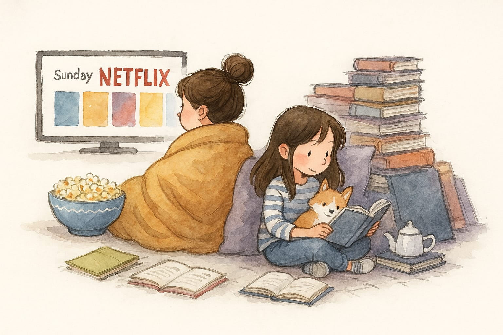

Sobre nós
A BiblioCine nasceu da paixão por histórias em suas diversas formas. Como muitos de vocês, adoramos mergulhar em livros, e sim, correr para o cinema logo depois (principalmente para ter o prazer de dizer "o livro é sempre melhor!"). Essa mistura de ler, assistir e debater é o que nos move. Percebemos que, assim como nós, muitos amantes da cultura pop sentiam a necessidade de um espaço para catalogar suas obras favoritas, compartilhar opiniões honestas – mesmo sobre aquele livro que não tinha um capítulo bom sequer – e acompanhar as reações dos amigos ao embarcar em uma leitura ou série que você indicou..

Foi a partir desses gostos e "dores" que a ideia da BiblioCine tomou forma. Nosso objetivo é criar uma comunidade online vibrante, um ponto de encontro para quem vive e respira a cultura popular. Aqui, você pode explorar o universo de livros, filmes e séries, compartilhar suas descobertas, discutir tramas e personagens, e celebrar a paixão por cada história que nos cativa. Seja para organizar sua estante virtual ou para participar de debates acalorados, a BiblioCine é o seu novo lar digital.